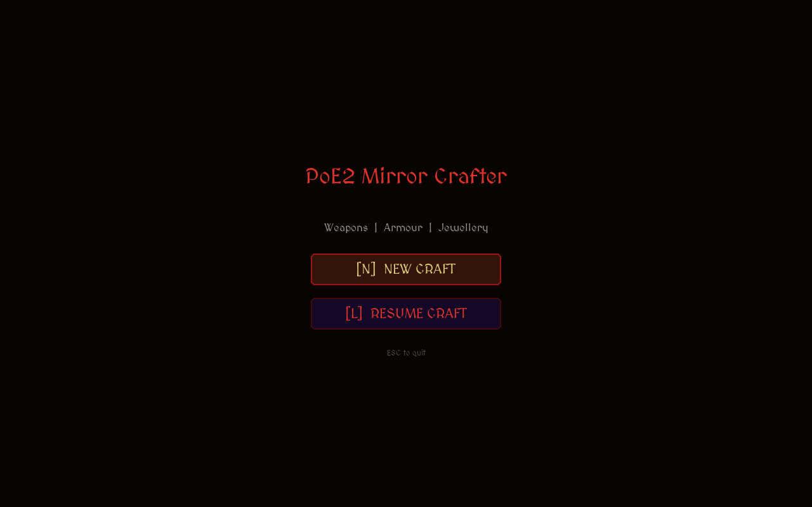
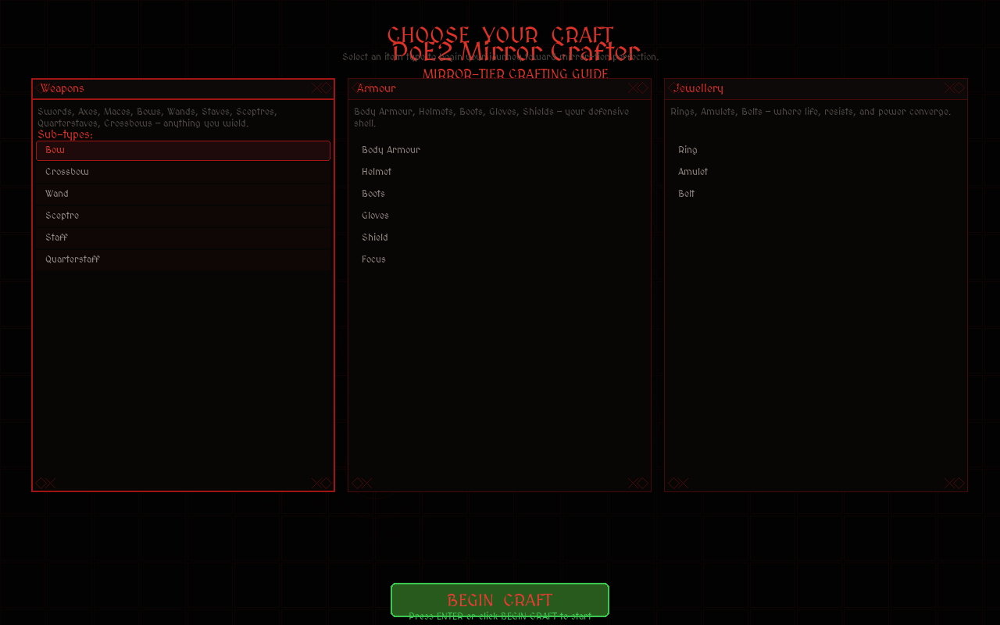
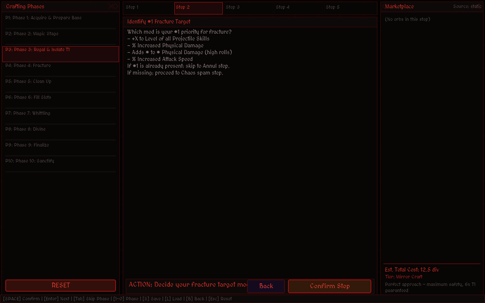
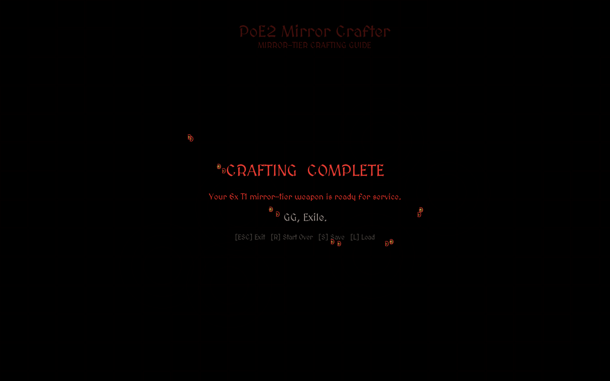
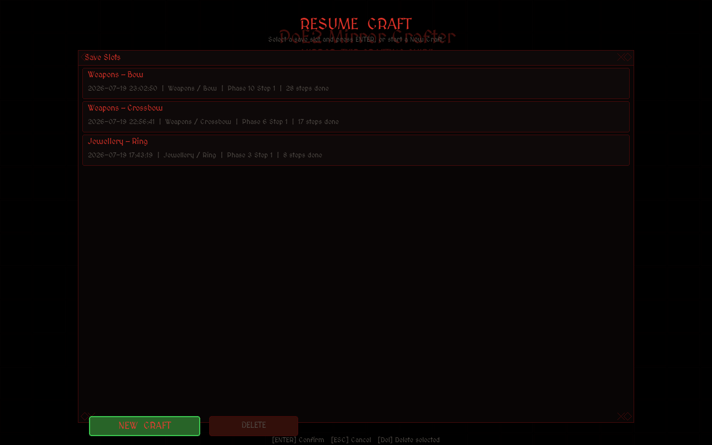

10-Phase Pipeline
Base → Magic → Regal → Fracture → Clean → Fill → Whittle → Divine → Finalize → Sanctify. Every step says what orb to use and what mod to look for.
Pick an item. Follow the steps. Don't brick your craft.
A desktop app that walks you through crafting mirror-tier items in Path of Exile 2. Tells you which orb to use, what to look for, and what it'll cost — in order, one step at a time. 15 item types. Live poe.ninja prices. Free. Open source.
git clone https://github.com/JerkyJesse/poe2-mirror-crafter.git
Python 3.8+ and Pygame. pip install -r requirements.txt then python main.py





Left: alt-tabbing between wikis, trade site, and poe.ninja. Right: the same craft, step by step, with costs shown.
# How to craft a mirror-tier bow 1. Buy an iLvl 82+ Thicket Bow base. 2. Transmute it. Check for T1 flat phys. If miss: scour + transmute again. 3. Augment. Hope for T1 hybrid phys. If miss: scour, repeat from step 2. 4. Regal. Isolate T1 prefix. Use Omen of Amelioration if you're worried. 5. Greater Essence of Torment to add T1 flat elemental damage. ...(still scrolling through 8 more wiki pages to figure out what's next)... Cost: open poe.ninja in another tab. Multiply by estimated attempts. Hope you didn't miss an omen step.
# Phase 3/10: Regal & Isolate T1 Item: Weapons > Bow Step 2/3 — Regal the item Use a Perfect Regal Orb Looking for: T1 hybrid phys, T1 attack speed, or T1 crit Orbs needed: 1x Perfect Regal Orb ~36c Omen of Amelioration ~12c Step total: 48c (0.25 div) [Confirm] SPACE | [Skip] TAB Market — live poe.ninja: Divine Orb 183c live Chaos Orb 1c Running total: 12.5 div Tier: Standard
git clone https://github.com/JerkyJesse/poe2-mirror-crafter.git
cd poe2-mirror-crafter
pip install -r requirements.txt
python main.pyWorks on Windows, macOS, and Linux. Only needs Python 3.8+ and Pygame.
| Space | Confirm current step |
| Enter | Next step / advance |
| Tab | Skip current phase |
| 1–0 | Jump to phase 1–10 |
| S | Save craft |
| L | Load craft |
| B | Back to selection |
| R | Refresh prices |
| Esc | Back / quit |
| Arrow keys | Navigate menus and alternatives |
main.py # Entry point
crafting_app.py # State machine, event loop (~635 LOC)
renderer.py # UI drawing, particles, fonts (~1080 LOC)
prices.py # poe.ninja API + fallback dictionary (~205 LOC)
state_manager.py # JSON save/load to AppData (~138 LOC)
icon_loader.py # Async orb icon downloader + cache (~193 LOC)
phases/ # Crafting data for all 15+ item types
base_phases.py # Universal 10-phase pipeline builder
weapon_phases.py # Bow, Crossbow, Wand, Sceptre, Staff, Quarterstaff
armour_phases.py # Body, Helm, Boots, Gloves, Shield, Focus
jewellery_phases.py # Ring, Amulet, Belt
docs/ # Reference crafting guides
tests/ # Headless smoke tests (~40 cases)| Budget | < 5 div | Minimal safety, higher risk of bricking |
| Standard | 5–25 div | Balanced approach with key omens |
| Mirror | > 25 div | Every omen, every safety net, guaranteed 6x T1 |
%APPDATA%\poe2-mirror-crafter\
saves\ # JSON save files (auto + manual slots)
icons\ # Cached orb icons from poe2db.tw CDNNothing leaves your machine except poe.ninja price requests. No telemetry, no accounts, no cloud.
phases/. Check AI_UPDATE_INSTRUCTIONS.md for the full guide.phases/ files, fill in the mod data, and register it in __init__.py.MIT. Source: github.com/JerkyJesse/poe2-mirror-crafter. Issues and PRs welcome.